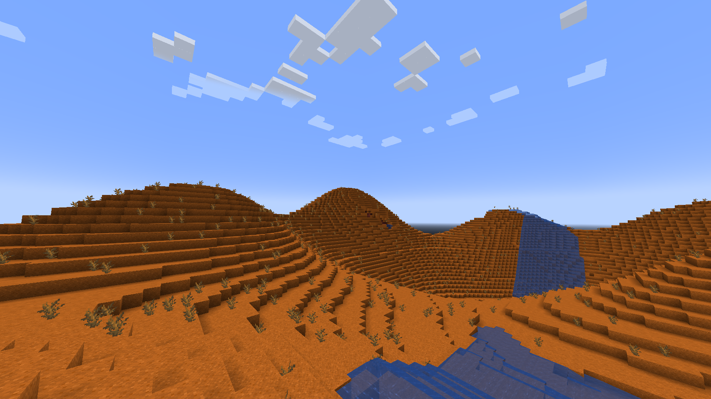
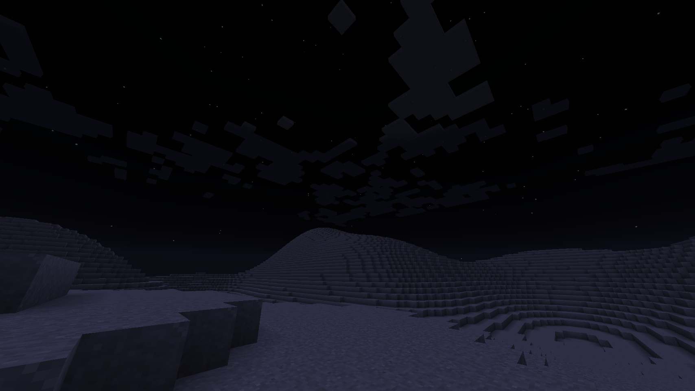

惑星探索ガイド
🎯 推奨探索順序
- 1 🔴 火星（Mars） 初心者向け - Lv1装備でOK
- 2 🌙 月（Moon） 中級者向け - Lv3装備推奨
- 3 🌍 その他の惑星 上級者向け - 完全装備必須
🔴 火星（Mars）初心者推奨

基本情報
- 重力: 低重力（ジャンプ力増加）
- 大気: なし（宇宙服必須）
- 放射線: Lv1（低い）
- 温度: Lv1（管理可能）
- 隕石: あり（地下基地推奨）
環境の特徴
火星は初心者が最初に訪れるのに最適な惑星です。基本的な宇宙服で生存可能です。
- 🌅 昼夜サイクル: 地球とほぼ同じ
- 🏔️ 地形: 赤い砂漠と岩山
- 🌪️ 砂嵐: 時々発生（屋内に避難）
- 🌌 空の色: 薄いオレンジ色
必要装備
✅ 基本装備で探索可能！
- ヘルメット: Lv1（空気供給）
- ベスト: Lv1（放射線防護）
- パンツ: Lv1（温度耐性）
- ブーツ: 基本装備でOK
💡 パッケージャーで作成した基本的な宇宙服セットで十分です！
資源と材料
- 🔸 鉄鉱石: 豊富に存在
- 🔸 コンジット: 金鉱石から入手可能
- 🔸 地下氷: 水の供給源
- 🔸 火星の土: 農業に利用可能（処理必要）
サバイバルのポイント
- 🏠 地下基地を建設して隕石から守る
- 💧 地下氷を探して水を確保
- 🌾 火星の土を処理して農業を開始
- ⛏️ 鉄鉱石が豊富なので資源収集に最適
🌙 月（Moon）中級者向け

基本情報
- 重力: 低重力（大幅なジャンプ力増加）
- 大気: なし（宇宙服必須）
- 放射線: Lv3（高い）
- 温度: Lv2（寒暖差激しい）
- 隕石: あり（頻繁）
環境の特徴
月は地球に最も近いですが、強い放射線のため適切な装備が必要です。
- 🌑 昼夜サイクル: なし（常に夜）
- 🪨 地形: クレーターと平原
- 💨 風: なし（大気がない）
- 🌍 地球の眺め: 美しい地球が見える
必要装備
⚠️ アップグレード装備が必要！
- ヘルメット: Lv1以上（空気供給）
- ベスト: Lv3必須（放射線防護）
- パンツ: Lv2推奨（温度耐性）
- ブーツ: Lv1推奨（ジェットパック）
⚠️ 放射線防護Lv3未満ではダメージを受けます！
資源と材料
- 🔹 月の石: 建築材料
- 🔹 ヘリウム3: 高度な燃料（レア）
- 🔹 チタン鉱石: 高確率で発見
- 🔹 クリスタル: 特殊な洞窟で発見
サバイバルのポイント
- ☢️ 放射線防護を最優先でアップグレード
- 🏠 深い地下基地で隕石と放射線から守る
- 🚀 ジャンプ力が非常に高いので落下注意
- 💎 クリスタル洞窟で希少資源を探そう
📊 惑星比較表
| 惑星 | 放射線 | 温度 | 必要装備 | 難易度 |
|---|---|---|---|---|
| 🌍 地球 | Lv0 | Lv0 | なし | ⭐ |
| 🔴 火星 | Lv1 | Lv1 | 基本装備 | ⭐⭐ |
| 🌙 月 | Lv3 | Lv2 | Lv3装備 | ⭐⭐⭐⭐ |